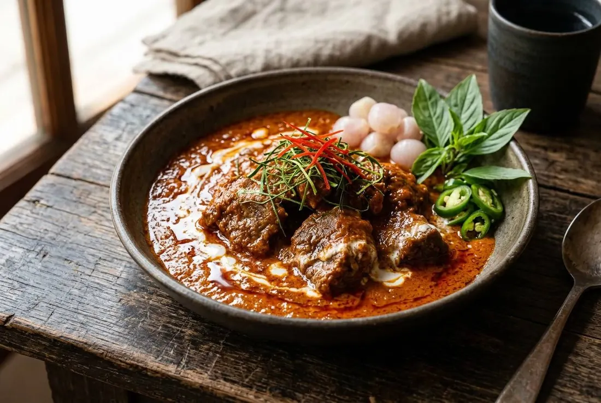

Beef braised in coconut milk, a from-scratch paste, ground peanuts stirred into the curry as it reduces. Served with pickled shallots and sweet basil — and no lime, whatever the internet photos say.

In 2023, TasteAtlas ranked panang the #6 food in the world — and its #1 stew. The photograph showed a tofu panang topped with peanuts, a lime wedge and coriander, and Thai cooks collectively asked whether that was even panang. The ranking was a compliment; the photo was not.
The real panang descends from King Rama V's royal kitchens. M.L. Nueang Nilrat — raised by the head of the royal kitchen herself — recorded the court recipe: meat simmered in coconut milk, paste fried in the cream, ground peanuts stirred in as the curry reduces, served with pickled shallots, sweet basil sprigs and fresh chillies arranged around the rim. No lime anywhere.
And the dish is its own thing. A Pantip commenter put the genealogy best: panang paste is the kua paste plus the "nine-spice blend" and roasted peanuts — "not a stir-fry and not a curry." Which is why their next sentence stings: "Nowadays everyone makes it with red curry paste — it just tastes like dry red curry." The western error, called out by Thai cooks years ago.
| Thai | English | Amount |
|---|---|---|
| พริกชี้ฟ้าแห้ง (แกะเม็ด) | Dried red spur chillies, deseeded | 15 g |
| พริกขี้หนูแห้ง | Dried red bird's eye chillies | 7 g |
| ข่าซอย | Galangal | 25 g |
| ตะไคร้ซอย | Lemongrass | 30 g |
| ผิวมะกรูด | Makrut lime zest | 10 g |
| หอมแดงไทย | Thai shallots | 35 g |
| กระเทียมไทย | Thai garlic | 25 g |
| กะปิย่าง | Grilled shrimp paste | 20 g |
| ดอกเกลือ | Salt flower | 7 g |
The classical nine-spice depth (พิกัดเก้า): dry-roast and pound — star anise 1 part, cinnamon 1, lesser galangal 1, bay leaf 1, white pepper 1, nutmeg 1, mace 1, cardamom 1, coriander seed 5. Add to the paste for the old-school version.
| Thai | English | Amount |
|---|---|---|
| เนื้อน่องลาย | Beef shank with visible marbling, cut bite-size | 1 kg |
| หางกะทิ | Thin coconut milk (for braising) | 500 ml |
| หัวกะทิคั้นสด | Fresh coconut cream | 1.2 litres |
| ถั่วลิสงคั่ว (ป่นละเอียด) | Roasted peanuts, finely ground | 60 g |
| น้ำตาลทราย | Sugar | 40 g |
| น้ำปลาดี | Good fish sauce | 20 ml |
| ใบมะกรูด (ซอยฝอย) | Makrut leaves, fine chiffonade | to finish |
| พริกชี้ฟ้า (ซอยเส้น) | Red spur chilli, sliced into threads | to finish |
| หอมดอง | Pickled shallots | to serve |
| ใบโหระพา | Sweet basil sprigs | to serve |
| พริกหยวก | Fresh spur chilli pieces | to serve |
Protein. Beef is the grand version; pork and chicken are the everyday ones; duck appears too. Tofu panang (the TasteAtlas photo) is not something Thais recognise.
The nine-spice blend. Classical pastes carry it; some modern restaurants run the cleaner fresh version (the Michelin recipe has no dry spices at all).
Peanuts. The court recipe and traditional home cooks stir ground peanuts into the curry. A few modern versions skip them entirely.
The lime wedge. Court recipe: no lime. Modern Thai restaurants sometimes serve one — but it's the TasteAtlas garnish that made Thai cooks flinch.
Thickness. Proper panang is thick and clinging (ขลุกขลิก); street versions sometimes run thinner — the argument is about how reduced, not about the idea.
This recipe is translated from the following Thai-language sources. Where they disagree, we've said so.
1. Michelin Guide Thailand (21 Aug 2026) — "วิธีทำพะแนงเนื้อให้อร่อยเด็ดแบบร้านมิชลิน" (Supanniga Eating Room, Tha Tian) — guide.michelin.com
2. Silpa-Mag (6 Jan 2023) — "พะแนง หรือ 'พะแนงเนื้อ' ตำรับชาววังสมัยรัชกาลที่ 5 ใส่ถั่วลิสง!?" (M.L. Nueang Nilrat's court recipe, from "ชีวิตในวัง") — silpa-mag.com
3. Pantip thread D8389020 (2009) — "เครื่องแกงพะแนงกับเครื่องแกงแดงมันแตกต่างกันอย่างไง" (paste genealogy, nine-spice blend) — pantip.com
4. Aroifin (30 Jun 2025) — "วิธีทำ พะแนงหมู สูตรพริกแกงตำเอง" (home pork version) — aroifin.com